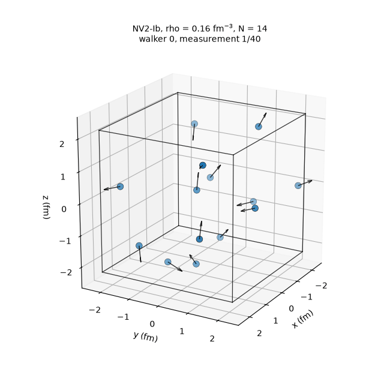

Now Computing the neutron-matter equation of state and neutron-star properties with NSmatter, my variational Monte Carlo code for nuclear and neutron-star matter.
Projects
Select a project to read the method, results and figures.
Spin-polarized neutron matter from chiral effective field theory
Supervisor Prof. Ignazio Bombaci · Co-supervisor Dr. Vishal Parmar
The question
Pulsars and magnetars have inferred magnetic fields from \(10^{8}\) up to \(10^{15}\,\mathrm{G}\), and the origin of the strongest ones is not agreed upon. Every neutron carries a magnetic moment, so one possibility is that the dense matter in the star undergoes a spontaneous transition to a spin-polarized, ferromagnetic state.
For a free Fermi gas, polarizing always costs kinetic energy (Pauli principle). The nucleon–nucleon force is spin-dependent, though, so the question is whether the interaction can gain more than the kinetic cost.
The thesis targets the outer core of the star, \(0.5 \lesssim \rho/\rho_0 \lesssim 2\), modelled as pure neutron matter.
Method
The polarization is the imbalance between the two spin populations, each filling its own Fermi sea:
Brueckner–Hartree–Fock resums the strong short-range repulsion into the reaction matrix \(G\), the solution of the Bethe–Goldstone equation, and builds the single-particle potential from it self-consistently:
\[ \begin{aligned} G(W) &= v - v\,\frac{Q}{\varepsilon}\,G(W) \\ U(k) &= \mathrm{Re} \sum_{k' \le k_F} \langle k k' |\, G\big(e(k) + e(k')\big)\, | k k' \rangle_A \\ e(k) &= \frac{\hbar^2 k^2}{2m} + U(k) \end{aligned} \]
System: pure neutron matter at zero temperature, homogeneous and infinite.
Interaction: the local chiral potential NV2-Ib with explicit \(\Delta(1232)\) isobars, cutoffs \((R_L, R_S) = (1.0, 0.7)\,\mathrm{fm}\), fitted to NN scattering up to \(125\,\mathrm{MeV}\). It had not previously been applied to this system.
Self-consistency: continuous choice for \(U\), with \(U_\uparrow(k)\) and \(U_\downarrow(k)\) iterated until \(|\delta U| < 0.1\,\mathrm{MeV}\).
Code: I extended an inherited Fortran 77 BHF code to spin-polarized matter, rewriting most routines: separate spin populations, the three spin-pair channels \(\uparrow\uparrow\), \(\uparrow\downarrow\), \(\downarrow\downarrow\), and their statistical weights.
Grid: \(\rho = 0.10\text{–}0.37\,\mathrm{fm^{-3}}\) (up to \(\approx 2\rho_0\)), \(\Delta = 0\) to \(1\) in steps of \(0.1\), all partial waves up to \(J = 8\).
Play: two Fermi seas
Opposite-spin pairs, the only ones that feel the attractive \({}^1S_0\) channel, make up a fraction \(f_{\uparrow\downarrow} = (1-\Delta^2)/2\) of all pairs: 0.50.
Results
Equation of state. The energy per particle grows with \(\Delta\) at every density, and the potential energy follows a parabolic law across the whole range. At \(\Delta = 0\) the code reproduces Logoteta et al. (same interaction and method) within \(0.2\,\mathrm{MeV}\) up to \(0.37\,\mathrm{fm^{-3}}\).
Kinetic, potential and total energy per neutron for \(\Delta = 0, \dots, 1\). Move the slider to follow one polarization, or compare \(\Delta = 0\) with published BHF results; the three-nucleon force (Lovato et al.) adds \(\approx 4\,\mathrm{MeV}\) at \(\rho_0\).
Spin-resolved potentials. Polarizing makes the majority less bound and the minority more bound: the single-particle potentials at \(k = 0\) split almost linearly with \(\Delta\), with slopes \(+57.8\,\mathrm{MeV}\) for \(U_\uparrow\) and \(-41.1\,\mathrm{MeV}\) for \(U_\downarrow\).
Susceptibility. The curvature of the energy at \(\Delta = 0\) gives the magnetic susceptibility, in units of the free Fermi gas (Pauli paramagnetism):
A ferromagnetic transition would show up as \(\chi/\chi_F\) diverging and changing sign. Instead it falls from \(\approx 0.45\) to \(\approx 0.34\) between \(0.10\) and \(0.37\,\mathrm{fm^{-3}}\) and stays positive: no ferromagnetic instability up to \(\approx 2\rho_0\).
\(\chi/\chi_F\) compared with BHF results for older realistic potentials. The dashed curve uses the same definition as those references.
Why. Decomposing the interaction energy by partial wave shows the mechanism. Polarizing removes opposite-spin pairs, switching off the attractive singlet \({}^1S_0\) channel, while the repulsive \({}^3P_1\) grows with both polarization and density.
Partial-wave contributions to \(V/A\) versus \(\Delta\). The singlets \({}^1S_0\) and \({}^1D_2\) need opposite-spin pairs and vanish at \(\Delta = 1\).
Outlook
Three-nucleon forces, densities beyond \(2\rho_0\), the other members of the NV2 family, and finite temperature.
Fortran 77CPython
Ongoing · 2026 · Python + JAX
NSmatter: variational Monte Carlo for neutron-star matter
Personal research code, written from scratch
What it is
NSmatter computes the equation of state and the spin–isospin structure of infinite nucleonic matter (pure neutron, symmetric, asymmetric and spin-polarized) with the local chiral Norfolk potentials NV2, with explicit \(\Delta(1232)\), and their three-nucleon partners NV3. It uses the same Hamiltonians as BHF calculations, so the uncertainty from the many-body method can be separated from the spread between interaction models.
The physics behind it
Neutron stars hold matter from a fraction of nuclear saturation density (\(\rho_0 \approx 0.16\,\mathrm{fm^{-3}}\)) in the crust to several times \(\rho_0\) in the core. Their mass, radius and tidal deformability are fixed by the equation of state, and by how that matter responds to an excess of neutrons over protons and to spin polarization. NSmatter computes these properties directly from a realistic nuclear Hamiltonian. Open a topic below for details.
1 · The Hamiltonian: nucleons and chiral forces
Nucleons are treated as non-relativistic point particles with two- and three-body interactions:
Two-body force (NV2). The Norfolk potentials of Piarulli et al. are derived in chiral effective field theory with explicit \(\Delta(1232)\) isobars: one-pion exchange, \(\Delta\)-full two-pion exchange up to next-to-next-to-leading order, and contact terms up to N3LO. They are local, in coordinate space, and written as a sum of operators:
\[ v_{ij} = \sum_p v^{p}(r_{ij})\, O^{p}_{ij} \]
The \(O^p\) are central, spin–isospin (\(\boldsymbol\sigma_i\!\cdot\!\boldsymbol\sigma_j\), \(\boldsymbol\tau_i\!\cdot\!\boldsymbol\tau_j\)), tensor (\(S_{ij}\)), spin-orbit (\(\mathbf L\cdot\mathbf S\)), quadratic in momentum (\(\mathbf L^2\), \((\mathbf L\cdot\mathbf S)^2\)) and charge-dependent operators. Two cutoffs regulate the long range (\(R_L\)) and the short range (\(R_S\)). The four models Ia, Ib, IIa and IIb differ in their cutoffs and in the scattering energy they are fitted to (\(125\) or \(200\,\mathrm{MeV}\)), and the spread between them estimates the uncertainty of the chiral expansion.
Three-body force (NV3). Two-pion exchange through the \(\Delta\) (Fujita–Miyazawa) and the \(c_1\), \(c_3\) couplings, plus the contact terms \(c_D\) and \(c_E\). Neutron matter uses the "starred" fits, which also reproduce the tritium Gamow–Teller matrix element. With the original \(c_E\), pure neutron matter collapses.
Above about \(2\rho_0\), nucleon pairs have relative momenta beyond the range the force was fitted to, so results there are extrapolations of the interaction rather than predictions.
2 · Variational Monte Carlo
For any trial state \(\Psi\), the expectation value of \(H\) is an upper bound to the ground-state energy:
Here \(X\) collects the positions, spins and isospins of all particles. Configurations are drawn from \(|\Psi|^2\) with the Metropolis algorithm, and the energy is the average of the local energy \(E_L\) over the samples.
No sign problem. \(|\Psi|^2\) is a positive probability density at any density and composition.
Zero-variance property. The variance of \(E_L\) vanishes for an exact eigenstate, so it measures the quality of the trial state sample by sample.
Every operator, exactly. Because \(E_L\) is evaluated exactly for the given \(\Psi\), VMC can treat \(\mathbf L^2\), \((\mathbf L\cdot\mathbf S)^2\) and the full three-body force, which projector methods such as AFDMC must approximate.
The price is the variational bias: the result is only as good as the trial wavefunction.
\(\Phi\) is a Slater determinant of plane waves, the exact ground state of the free Fermi gas in the box. It fixes the nodes and the antisymmetry.
\(e^{J}\) is a central Jastrow factor that keeps nucleons apart where the short-range repulsion acts.
Operator correlations \(u_p(r)\, O^p\) build in the spin–isospin structure of the force. Without them, the tensor force averages to exactly zero in a closed-shell determinant: it binds only through tensor correlations, the same ones that give the deuteron its D-state.
Each correlation function is expanded on a smooth basis that is linear in the few dozen variational parameters \(a_m\):
It vanishes at the cutoff together with its first two derivatives, so no hidden delta functions appear in the kinetic energy.
4 · Spin and isospin as coordinates
Rather than storing a vector over all \(2^N\) spin states, as Green's function Monte Carlo does, the wavefunction is evaluated configuration by configuration, so the cost grows only polynomially with \(N\). Isospin labels stay fixed, since the Hamiltonian conserves the numbers of protons and neutrons. Each spin is a continuous spinor on the unit sphere of \(\mathbb{C}^2\), sampled together with the positions and moved by random \(SU(2)\) rotations.
Continuous spinors are needed because the tensor and spin-orbit forces do not conserve the total spin projection. A correlated state has components in every \(S_z\) sector, and a walker with discrete spins could land where the determinant vanishes. The spin–isospin operators act as exchanges, so their action on \(\Psi\) is \(\Psi\) evaluated with two spins swapped:
The parameters are optimized by stochastic reconfiguration, the natural gradient of the energy. With the log-derivatives \(O_k = \partial \ln\Psi / \partial p_k\) sampled together with the energy, and \(\delta A = A - \langle A \rangle\):
\[ \begin{aligned} g_k &= 2\,\mathrm{Re}\,\langle \delta O_k^{*}\, \delta E_L \rangle, \qquad S_{kl} = \mathrm{Re}\,\langle \delta O_k^{*}\, \delta O_l \rangle, \\ p &\;\to\; p - \eta\, (S + \epsilon\,\mathbb{1})^{-1}\, g \end{aligned} \]
The metric \(S\) measures each step by how much the wavefunction changes rather than how much the parameters change, which makes the update equivalent to imaginary-time evolution projected onto the variational manifold. Each run has an optimization phase, where the variance of \(E_L\) is watched for convergence, and an evaluation phase with frozen parameters, which gives the quoted energy and its error.
6 · Infinite matter in a periodic box
\(N\) nucleons sit in a cubic box of side \(L = (N/\rho)^{1/3}\) with periodic boundary conditions. Near \(\rho_0\) the box is only a few fm across, comparable to the range of the force, so each pair interacts with all periodic images of its partner. Each spin–isospin population fills complete momentum shells (\(1, 7, 19, 27, 33, \dots\) particles), so that the free ground state is unique and keeps the symmetries of the box. The remaining finite-size effects are reduced with a free-gas correction and twist-averaged boundary conditions.
Successive Monte Carlo samples are correlated, so errors come from a Flyvbjerg–Petersen blocking analysis: averaging the series in pairs until the error estimate reaches a plateau.
7 · From the equation of state to neutron stars
The neutron-matter energies are fitted and the thermodynamics follows from the fit:
Where the fit would turn acausal, it is continued with \(c_s^2 = 1\). The Tolman–Oppenheimer–Volkoff equations, with the \(l = 2\) tidal perturbation, then give the mass–radius relation, the maximum mass and the tidal deformability \(\Lambda\). The statistical errors of the energies are carried through to the stars by a parametric bootstrap.
8 · Implementation and validation
The code is written in Python with JAX. jit compiles the inner loop for CPU or GPU, vmap runs it over hundreds of walkers at once, and automatic differentiation gives the kinetic energy, the momentum-dependent operators and the optimizer's log-derivatives exactly. Everything runs in double precision. Moving one pair changes only two columns of the Slater matrix, so the ratio \(\Psi'/\Psi\) comes from a rank-2 update in \(O(N^2)\) instead of \(O(N^3)\).
In VMC a bug rarely crashes the program: it gives a smooth, plausible and wrong energy, which the variational principle does not flag. So every module was written against a test with an exact answer: the free gas as an exact eigenstate, analytic Hartree–Fock energies, the deuteron and the \({}^1S_0\) scattering length for NV2, and the full \(2^8\)-dimensional spin space of 8 neutrons for the three-body force.
Results: pure neutron matter
7 spin-up and 7 spin-down neutrons in a periodic box, 132 walkers, 60 stochastic-reconfiguration iterations and 40 measurements per run, at nine densities from \(0.04\) to \(0.48\,\mathrm{fm^{-3}}\) (three times \(\rho_0\)). Three Norfolk models are computed with their three-body partners (NV2+3-Ia*, -Ib* and -IIb*), and NV2-Ib also with the two-body force alone. Energies are variational upper bounds with statistical errors.

One walker across the 40 measurements at \(0.16\,\mathrm{fm^{-3}}\): 14 neutrons in the periodic box, with arrows showing the direction of each spinor.VMC energies per neutron for the three models, the two-body NV2-Ib, the BHF result of my thesis for NV2-Ib, and the free Fermi gas, \(E/N = \tfrac{3}{5}\,\hbar^2 k_F^2/2m\). Hover a point for its value and error, or click a name to hide it.
ρ [fm−3]
NV2+3-Ia*
NV2+3-Ib*
NV2+3-IIb*
NV2-Ib
0.04
7.52 ± 0.06
8.42 ± 0.10
9.03 ± 0.11
8.32 ± 0.09
0.08
10.94 ± 0.08
12.52 ± 0.13
12.90 ± 0.17
11.75 ± 0.14
0.12
14.69 ± 0.08
16.93 ± 0.11
15.67 ± 0.12
15.11 ± 0.13
0.16
18.69 ± 0.10
22.53 ± 0.18
19.80 ± 0.14
19.11 ± 0.12
0.20
22.88 ± 0.15
29.09 ± 0.14
25.07 ± 0.19
23.76 ± 0.15
0.24
27.15 ± 0.15
36.65 ± 0.19
29.03 ± 0.15
29.47 ± 0.18
0.32
38.01 ± 0.21
55.87 ± 0.27
41.41 ± 0.20
42.17 ± 0.22
0.40
48.81 ± 0.31
79.50 ± 0.37
54.21 ± 0.20
57.55 ± 0.28
0.48
60.27 ± 0.24
107.37 ± 0.45
70.02 ± 0.21
74.28 ± 0.35
Energy per neutron in MeV. The three-body force grows quickly with density and differs strongly between models: at \(0.48\,\mathrm{fm^{-3}}\) it adds \(3.5\), \(16.3\) and \(31.6\,\mathrm{MeV}\) per neutron for Ia*, IIb* and Ib*. Adding spin-orbit correlations to the trial state lowers NV2+3-Ib* at \(0.16\,\mathrm{fm^{-3}}\) from \(22.53\) to \(20.72 \pm 0.16\,\mathrm{MeV}\).
Where the energy comes from. At \(0.16\,\mathrm{fm^{-3}}\) the central part of the force gives \(-29.09 \pm 0.18\,\mathrm{MeV}\) and the momentum-dependent (quadratic) terms \(+7.70 \pm 0.06\,\mathrm{MeV}\). With NV3-Ib*, the three-body force adds \(3.43 \pm 0.03\,\mathrm{MeV}\).
Kinetic energy, total potential energy and the potential split by operator group (two-body NV2-Ib). Click a name to hide or show it.
Structure. The pair distribution shows the correlation hole, and the spin correlation \(\langle \boldsymbol\sigma_i\cdot\boldsymbol\sigma_j \rangle\) approaches \(-3\) at short distance, where close neutron pairs are in the spin singlet. Switch the axis to \(k_F r\) and the curves at different densities nearly collapse.
\(g_{nn}(r)\) and \(\langle \boldsymbol\sigma_i\cdot\boldsymbol\sigma_j \rangle(r)\) for \(\rho = 0.04\text{–}0.24\,\mathrm{fm^{-3}}\). In units of \(1/k_F\), the dashed curve is the free Fermi gas, \(1 - \tfrac{1}{2}\,[3 j_1(k_F r)/k_F r]^2\).
Neutron stars
Each model's fit, joined to the SLy crust below \(0.08\,\mathrm{fm^{-3}}\), goes through the TOV equations:
model
Mmax [M⊙]
R1.4 [km]
Λ1.4
NV2+3-Ia*
1.53 ± 0.03
9.82 ± 0.12
68 ± 8
NV2+3-Ib*
2.27 ± 0.02
13.15 ± 0.01
590 ± 4
NV2+3-IIb*
1.83 ± 0.02
11.19 ± 0.03
193 ± 4
NV2-Ib 2N only
1.92 ± 0.02
11.63 ± 0.03
257 ± 5
combined
1.87 ± 0.65
11.4 ± 2.3
284 ± 297
The combined row is the mean of the three NV2+3 models with the full error budget in quadrature. Statistical errors are negligible. The largest terms are the spread between interaction models (\(\pm 0.37\,M_\odot\) on \(M_{\max}\), \(\pm 1.7\,\mathrm{km}\) on \(R_{1.4}\)) and the many-body method, estimated as the difference from AFDMC fits for the same models (Lovato et al.): AFDMC lies \(3.5\text{–}4.2\,\mathrm{MeV}\) per neutron lower at \(\rho_0\), and shifts \(R_{1.4}\) by up to \(1.2\,\mathrm{km}\). The form of the fit and the crust add up to \(0.85\) and \(0.42\,\mathrm{km}\).
Pure neutron matter in the core (no protons), 14 neutrons, no finite-size correction. Above \(0.48\,\mathrm{fm^{-3}}\), the largest computed density, the equation of state is the fit's extrapolation, continued with \(c_s^2 = 1\) where it would turn acausal.
PythonJAXNumPy / SciPyuv
Numerical Lab III · 2026 · C, Python
Thermodynamics of a free scalar field in 1+1 dimensions
What it is
A lattice Monte Carlo study of a free neutral scalar field in two space-time dimensions. I computed the internal energy density \(\varepsilon/T^2\) and the trace of the energy–momentum tensor \((\varepsilon - P)/T^2\), both refining the lattice at fixed physical volume and scanning the temperature, then compared them with the exact continuum results.
Method
On the lattice, with \(\hat\phi\) and \(\hat m = am\) in lattice units and \(S_n\) the sum of the nearest neighbours of site \(n\), the action and the heat-bath distribution of each site are:
Lattice: Euclidean space-time lattice with temperature \(T = 1/(aN_t)\). The energy comes from an anisotropic discretization, the trace from the derivative with respect to the lattice spacing.
Updates: 20% heat-bath (exact Gaussian sampling of each site given its neighbours) and 80% microcanonical (reflection \(\hat\phi_n \to 2\mu - \hat\phi_n\), which leaves the action unchanged and decorrelates faster). I proved irreducibility, aperiodicity and detailed balance.
Renormalization: each observable is subtracted with a \(T \simeq 0\) run on a lattice with a long time direction.
Continuum limit: at \(m/T = 1\) with \(N_t = 4, \dots, 10\) and \(N_s/N_t = 4, 6, 8\), extrapolated in \(1/N_t^2\).
Results
At fixed physical volume the data are linear in \(1/N_t^2\) and extrapolate toward the exact continuum values at \(T = m\), with finite-volume effects clearly visible for the smallest box:
In the temperature scan, \(\varepsilon/T^2\) rises toward the massless limit \(\pi/6\), while the trace anomaly peaks near \(T/m \approx 0.8\text{–}1.0\), the crossover where the mass stops mattering.
Temperature scans for \(N_t = 4, 6, 8\) at \(N_s/N_t = 5\). Coarser lattices (smaller \(N_t\)) sit above at high \(T/m\): discretization errors.
After continuum extrapolation this gives \(P/T^2 = 0.3748 \pm 0.0026\), \(3.2\sigma\) above the exact \(0.3665\). The residual discretization errors and the 15-point trapezoidal integration both push the value up, and more data points at larger \(N_t\) would be needed to remove the bias.
CPython
Numerical Lab II · 2025 · C, Python
Topology of a quantum particle on a circle
What it is
A quantum particle on a circle is the simplest system with non-trivial topology: Euclidean paths are classified by how many times they wind around the circle. This connects to my B.Sc. thesis, Quantum Mechanics of a Particle on a Circle (supervised by Prof. Claudio Bonati), on the effect of non-trivial topology on the energy spectrum.
The observable is the mean squared winding number \(\langle Q^2 \rangle\), which gives the topological susceptibility at \(\theta = 0\). It can be sampled directly, even though the \(\theta\)-term itself would make the Euclidean action complex. In the two limits the prediction is:
Discretization: paths on \(N_t\) Euclidean time slices, with the signed shortest distance on the circle so that the winding number is well defined.
Updates: local Metropolis moves of maximum size \(1/2\) (in units of the circumference). I proved irreducibility, aperiodicity and detailed balance.
Errors: block jackknife with automatic detection of the plateau in block size.
Runs: a low-temperature continuum limit (\(\beta' = \beta\hbar^2/4\pi^2 mR^2 = 2\), \(N_t = 25, \dots, 325\)) and a high-temperature scan (\(N_t = 20\), \(\beta'\) from \(2.0\) down to \(0.22\)).
Results
Low temperature. \(\langle Q^2 \rangle\) converges to the predicted value \(2\) as the lattice spacing goes to zero. The statistical error grows exponentially with \(N_t\), because local updates almost never change the winding sector. This is topological freezing, and the fitted rate is of the order of the simple estimate \(e^{-N_t/16}\).
High temperature. The data trend toward the asymptotic form \(2e^{-1/(2\beta')}\). The ratio to it rises from \(0.71\) at \(\beta' = 0.35\) to \(0.84\) at \(\beta' = 0.22\), as expected: higher winding sectors and discretization effects still contribute at the temperatures simulated.
The temperature scan at \(N_t = 20\), the continuum limit at \(\beta' = 2\) (\(N_t = 25, \dots, 325\)), and the exponential growth of the error that signals topological freezing.
CPython
Numerical Lab I · 2025 · C, Python
Critical properties of the 2D Ising model
What it is
A Monte Carlo study of the critical point of the two-dimensional Ising model: determine \(\beta_c\), extract the exponents \(\nu\) and \(\gamma\), and test the finite-size scaling hypothesis by data collapse.
Algorithm: Wolff single-cluster updates with \(P_{\text{add}} = 1 - e^{-2\beta J}\), which flip whole correlated regions and beat critical slowing down. With this choice every cluster flip is accepted and detailed balance holds by construction. I also proved irreducibility and aperiodicity.
Runs: square lattices with \(L = 20, \dots, 160\) and periodic boundaries, scanning 40 values of \(\beta\) around the pseudo-critical point, with \(1.0\text{–}1.6 \times 10^6\) cluster updates per run.
Observables: \(\langle |m| \rangle\), the susceptibilities \(\chi\) and \(\chi'\), and the Binder cumulant \(U = \langle m^4 \rangle / \langle m^2 \rangle^2\). Errors come from binning and block jackknife.
Analysis: parabolic fits to the \(\chi'\) peaks give \(\beta_{pc}(L)\) and \(\chi'_{\max}(L)\), which are fitted with the scaling laws below while varying the smallest lattice included.
|m| over the last updates · dashed: exact value in the infinite system (Onsager), zero above \(T_c\)
What to watch. Cold: starting from random spins, domains grow and merge (coarsening, which takes a while) until one colour takes over and |m| approaches the dashed line. Hot: salt-and-pepper noise, |m| stays near 0. At \(T_c = 2/\ln(1+\sqrt2) \approx 2.269\): patches of every size form and dissolve, and |m| wanders. Compare the two algorithms there. Metropolis flips one spin at a time and the big patches barely move. Wolff grows a cluster of aligned spins (shown in blue) and flips it all at once, so the picture decorrelates in a few steps.
Results
The subtracted susceptibility and the Binder cumulant for \(L = 20, \dots, 160\). Switch to finite-size scaling to rescale the same data with the exact exponents (\(\beta_c = 0.440687\), \(\nu = 1\), \(\gamma/\nu = 7/4\)): all sizes collapse onto one curve.
quantity
this work
exact
βc
0.44096 ± 0.00028
0.440687
ν
1.080 ± 0.075
1
γ/ν
1.7476 ± 0.0082
1.75
All three agree with the exact values within errors, which include statistical and systematic contributions: \(\gamma/\nu\) within \(0.3\sigma\), \(\beta_c\) at about \(1\sigma\) and \(\nu\) at about \(1.1\sigma\).
The animation on the card is a live Metropolis simulation at the critical temperature, running in your browser.
CPython
Course projects · 2025
Running couplings in QED and QCD
What it is
Analytic derivations of how coupling constants change with the energy scale, in the two gauge theories of the Standard Model where the effect is most striking.
Method
Derived the QED running coupling and the Uehling potential from vacuum polarization.
Derived the one-loop QCD β function, which shows asymptotic freedom.
Dimensional regularization and the renormalization group.
At leading order, for \(Q^2 \gg m^2\) in QED and with \(n_f\) quark flavours in QCD, the results take the standard form: